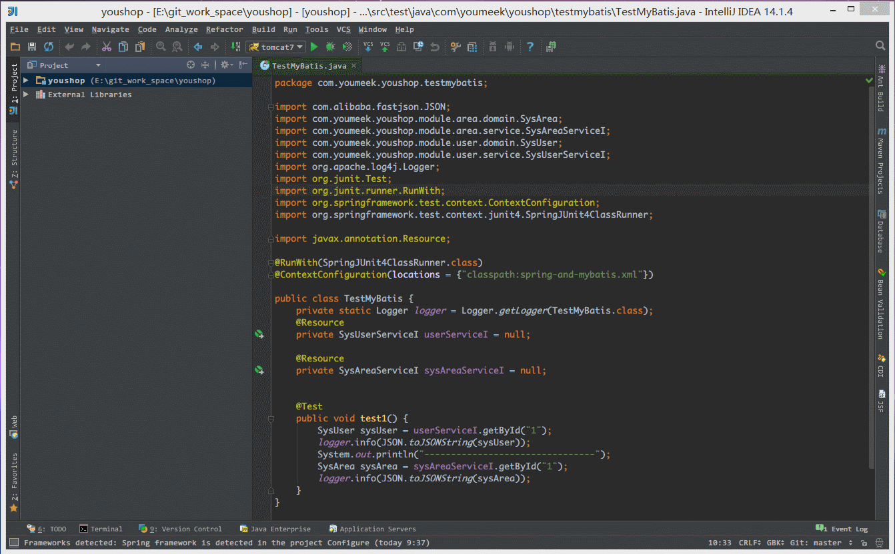
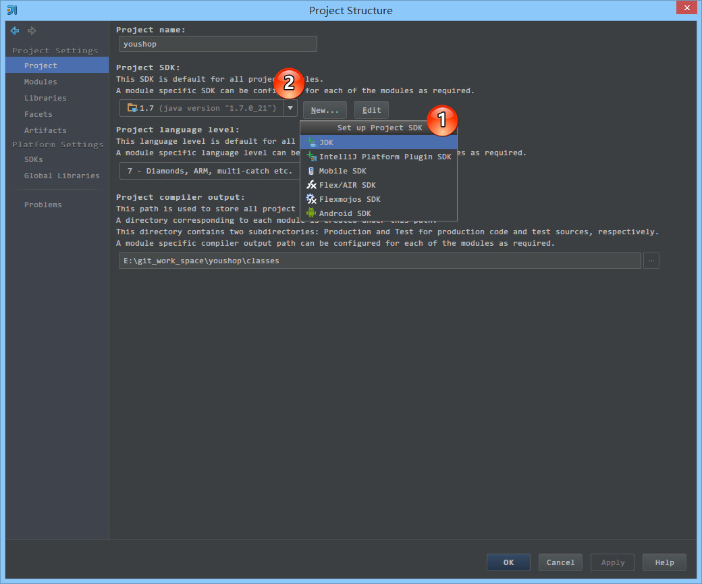
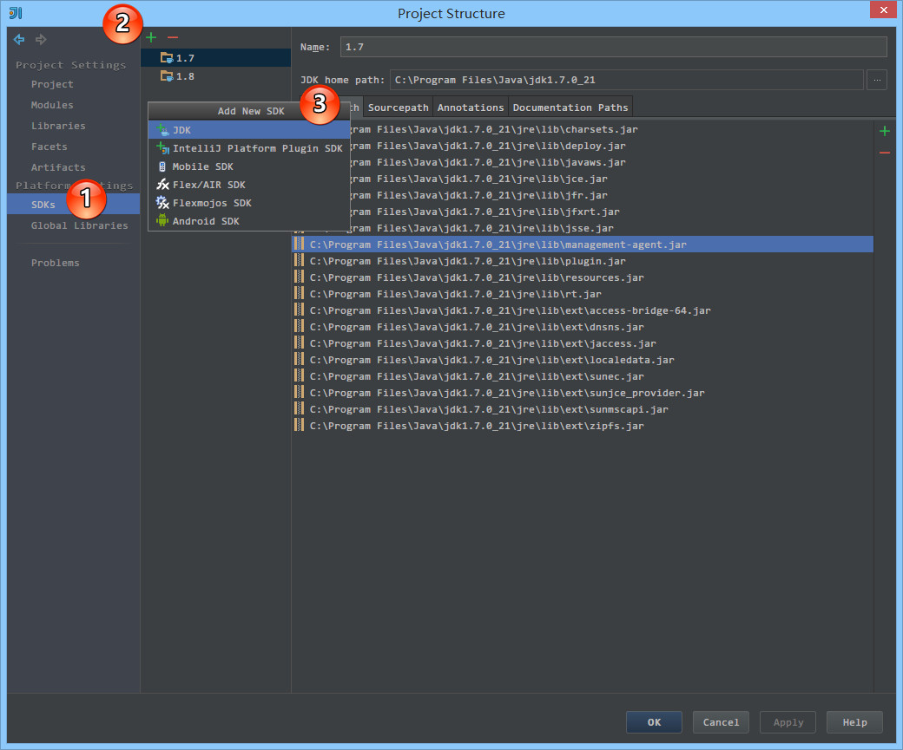
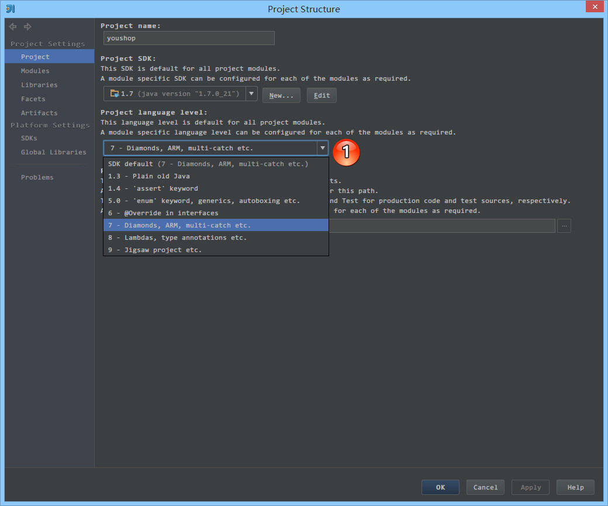
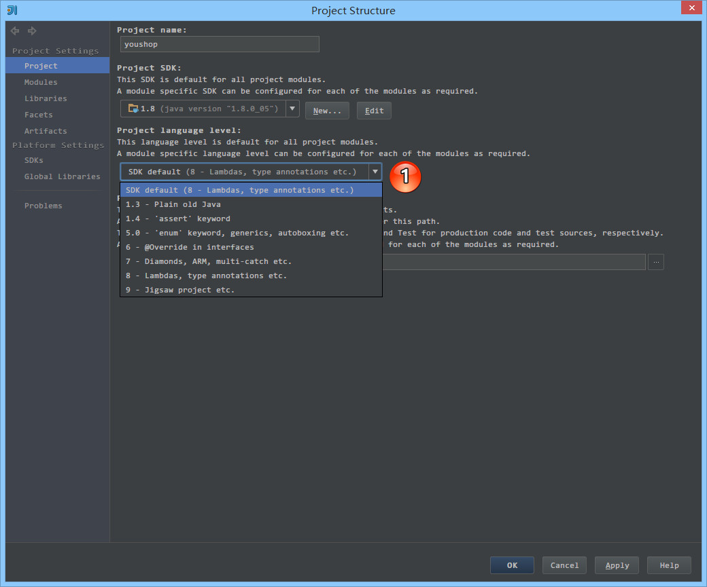
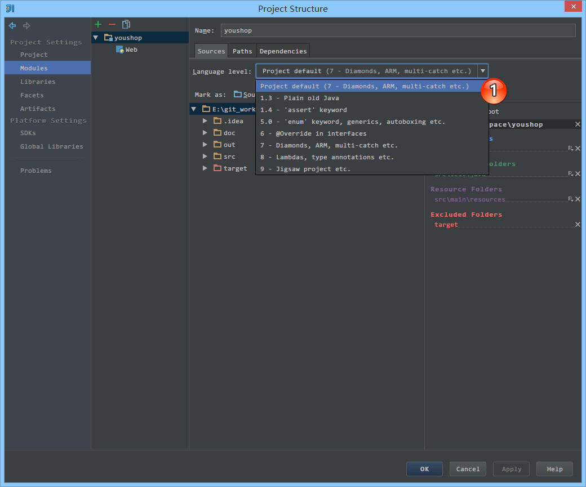
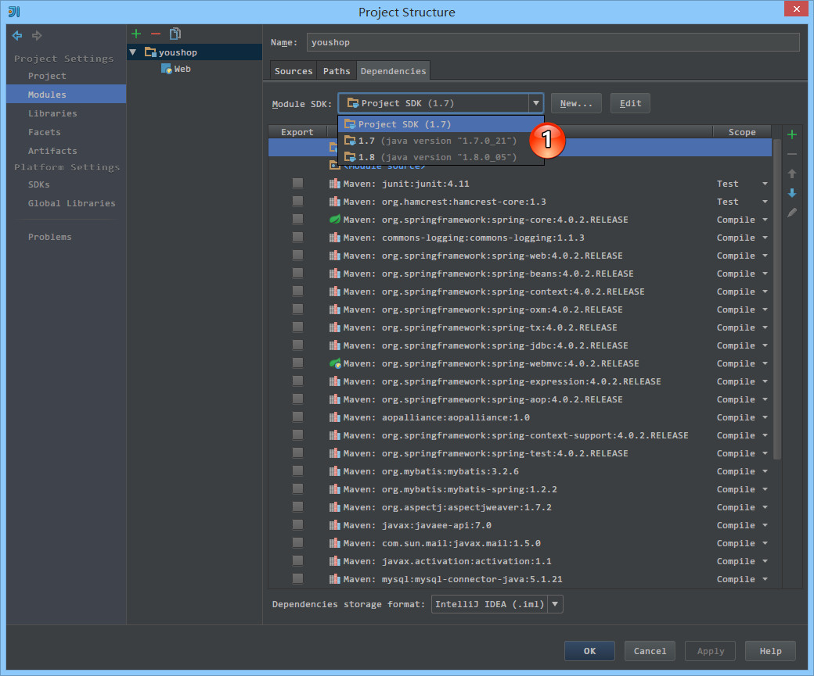

IntelliJ IDEA 项目相关的几个重要概念介绍
必备材料介绍
- IntelliJ IDEA 对其他 IDE 转过来的用户有特别优待，对其专门整理了非常棒的资料，还请其他 IDE 过来的用户抽时间查看，会有很大帮助：
- Eclipse 用户可以看：https://www.jetbrains.com/idea/help/eclipse.html
- NetBeans 用户可以看：https://www.jetbrains.com/idea/help/netbeans.html
Project 和 Module 介绍
这两个概念是 IntelliJ IDEA 的必懂知识点之一，请务必要学会。
如果你是 Eclipse 用户，并且已经看了上面给的链接，那 IntelliJ IDEA 首先告诉你一个非常重要的事情：IntelliJ IDEA 没有类似 Eclipse 工作空间（workspace）的概念的。很多从 Eclipse 转过来的人总是下意识地要再同一个窗口管理 n 个项目，这在 IntelliJ IDEA 是无法得到。IntelliJ IDEA 提供的体验是：一个 Project 打开一个 Window 窗口。
对于 Project，IntelliJ IDEA 是这样解释的：
- Whatever you do in IntelliJ IDEA, you do that in the context of a project. A project is an organizational unit that represents a complete software solution. It serves as a basis for coding assistance, bulk refactoring, coding style consistency, etc.
- Your finished product may be decomposed into a series of discrete, isolated modules, but it's a project definition that brings them together and ties them into a greater whole.
- Projects don't themselves contain development artifacts such as source code, build scripts, or documentation. They are the highest level of organization in the IDE, and they define project-wide settings as well as collections of what IntelliJ IDEA refers to as modules and libraries.
- 20170630 更新新地址：https://www.jetbrains.com/help/idea/about-projects.html
对于 Module，IntelliJ IDEA 是这样解释的：
- A module is a discrete unit of functionality which you can compile, run, test and debug independently.
- Modules contain everything that is required for their specific tasks: source code, build scripts, unit tests, deployment descriptors, and documentation. However, modules exist and are functional only in the context of a project.
- Configuration information for a module is stored in a .iml module file. By default, such a file is located in the module's content root folder.
- Development teams, normally, share the .iml module files through version control.
通过上面的介绍我们知道，在 IntelliJ IDEA 中 Project 是最顶级的级别，次级别是 Module。一个 Project 可以有多个 Module。目前主流的大型项目结构都是类似这种多 Module 结构，这类项目一般是这样划分的，比如：core Module、web Module、plugin Module、solr Module 等等，模块之间彼此可以相互依赖。通过这些 Module 的命名也可以看出，他们之间应该都是处于同一个项目业务情况下的模块，彼此之间是有不可分割的业务关系的。
所以我们现在总结：一个 Project 是由一个或多个 Module 组成，模块之间尽量是处在同一个项目业务的的情况下，彼此之间互相依赖关联。这里用的是 尽量，因为 IntelliJ IDEA 的 Project 是一个没有具备任何编码设置、构建等开发功能的，主要起到一个项目定义、范围约束、规范等类型的效果，也许我们可以简单地理解为就是一个单纯的目录，只是这个目录命名上必须有其代表性的意义。
下面我们以著名的 spring-framework 项目为例介绍多 Module 的结构的：
- 项目主页：https://github.com/spring-projects/spring-framework：
- 该项目的
Project命名是：spring-framework。该目录主要作用为各个Module的顶层目录进行约束，告诉协同者，这个目录下都是spring-framework相关的，我绝不会放 Android 相关源码、文档、文件在上面的。该目录并不是以一个实际性的目录来体现的，所以你访问主页是看不到的，但是当你checkout的时候，你必须为这个项目命名，至于命名默认就是spring-framework。- 该
Project下有二十来个Module，各个Module的命名也是有含义的，比如：spring-core、spring-jdbc、spring-jms、spring-orm、spring-web、spring-webmvc等等，我们通过这些命名也能清楚地知道他们要表达的含义，这些 Module 下也都各自有src编码目录，可以自行编码和构建。

- 相比较于多 Module 项目，小项目就无需搞得这么复杂。只有一个 Module 的结构 IntelliJ IDEA 也是支持的，并且 IntelliJ IDEA 创建项目的时候，默认就是单 Module 的结构的。
- 如上图 Gif 图演示，在输入
Project name的时候，Module name和Module file Location自动进行改变，同时Project location和Module file Location完全一样，这也就表示，Project 目录和 Module 目录是同一个，所以此时 Project 目录下就会有src目录，但是我们应该明白其本质还是 Module 的目录。
关于 IntelliJ IDEA 的 Project 和 Module 终于解释清楚了，但是由于 IntelliJ IDEA 官网上又有一段话对此解释得不够好，特别是对 Eclipse 用户来讲：https://www.jetbrains.com/idea/help/eclipse-faq.html，其中有这样两句话：
- An Eclipse workspace is similar to a project in IntelliJ IDEA
- An Eclipse project maps to a module in IntelliJ IDEA
你可以把 IntelliJ IDEA 的 Project 当做 workspace 使用，IntelliJ IDEA 也是支持的，但是就像我们前面解释的那么那么多，这样是非常不符合其初衷的，所以请别把这段话当做教义去学习。对此 zeroturnaround 的大牛也有针对此进行了说明：http://zeroturnaround.com/rebellabs/getting-started-with-intellij-idea-as-an-eclipse-user/3/
SDK（Software Development Kit） 介绍

- 按
Ctrl + Shift + Alt + S弹出项目结构设置区，如上图所示。- 如上图标注 1 所示，IntelliJ IDEA 支持 6 种 SDK。最常用的就是
JDK和Android SDK，其中在创建Android SDK的时候如果你没有先配置一个JDK的话，IntelliJ IDEA 则会提示你要先配置一个JDK，然后才能配置Android SDK。- 如上图标注 2 所示，下拉会展示已经创建的所有 SDK，可以很方便地不同 SDK 中切换。在开发 Java 项目过程中，由于 IntelliJ IDEA 支持管理多个
JDK，所以你完全不用担心你系统上不同项目需要不同JDK。

- 如上图标注 1 所示，
SDKs为 SDK 的统一管理处。- 如上图标注 2 所示，加号可以添加新 SDK，支持的类型如标注 3 所示；减号可以删除光标所选的 SDK。
- 官网介绍：https://www.jetbrains.com/idea/help/sdk.html
language level 介绍
其他 IDE 没有看到类似 language level 的设置，所以这个功能应该算是 IntelliJ IDEA 特有的，可是 IntelliJ IDEA 官网也没有专门介绍 language level 的地方，也许 IntelliJ IDEA 认为这个知识点属于 JDK 范畴所以没加以介绍吧。所以这里主要我对此的一些理解。我们应该知道 Java JDK 在每个新版本都会有其新特性，而新版本一般也会向下兼容旧版本的特性，IntelliJ IDEA 是对这些 JDK 的新特性是这样介绍的：
- JDK 6 的新特性：@Override in interfaces
- JDK 7 的新特性：Diamonds，ARM，multi-catch etc.
- JDK 8 的新特性：Lambdas，type annotation etc.
- JDK 9 的新特性：Jigsaw project etc.
etc. == et cetera == and so on == 等等


- 如上第一张图标注 1，使用的是 JDK 7，显示的
SDK default为7 - Diamonds，ARM，multi-catch etc.- 如上第二张图标注 1，使用的是 JDK 8，显示的
SDK default为8 - Lambdas，type annotation etc.
当我们使用 JDK 8 的时候，我们只能向下兼容 JDK 8 及其以下的特性，所以只能选择 8 及其以下的 language level。所以当我们项目使用的是 JDK 8，但是代码却没有使用 JDK 8 的新特性，最多使用了 JDK 7 的特性的时候我们可以选择 7 - Diamonds，ARM，multi-catch etc.。
对此我们总结 language level：限定项目编译检查时最低要求的 JDK 特性。
现在假设我们有一个项目代码使用的 JDK 8 新特性：lambda 语法，但是 JDK 选择的却是 JDK 7，即使 language level 选择了 8 - Lambdas，type annotation etc.，也是没有多大意义的，一样会编译报错。
Module 下的 SDK 和 language level
对于大型项目，各个 Module 用到的 SDK 和 language level 很有可能是各不一样的，IntelliJ IDEA 对此也进行了支持。

- 如上图标注 1 所示，可以针对 Module 选择其他 SDK，默认选择的是
Project SDK

- 如上图标注 1 所示，可以针对 Module 选择其他
language level，默认选择的是Project language level